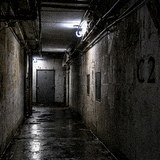
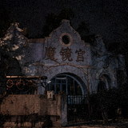

南桥旧梦

今天路过看见老电影院门口的字都拆了，突然想不起最后一年还在放什么。我小时候周末老去二楼，木椅子一动整排都响。

今天路过看见老电影院门口的字都拆了，突然想不起最后一年还在放什么。我小时候周末老去二楼，木椅子一动整排都响。
最后一场不知道，06年我还看过《宝贝计划》。后来大厅一半改录像厅，一半卖瓜子饮料，味道特别重。
我爸说以前单位发电影票，票上写“对号入座”，其实进去谁先坐就是谁的。冬天地上还有煤炉。
后门那家糖炒栗子还在，搬到菜市场西口了。老板还是原来那个，纸袋换成塑料袋以后反而没以前香。

影院关门不是一下关的，先是晚上那场不放，再是二楼封了，最后只剩门口租碟的小柜台。大概08年底彻底没了。
最记得散场以后骑自行车回家，沿河路那时候树还小，路灯隔很远一个。现在那条路晚上比白天还亮。
楼上说得我也想起来了。不是非得把旧东西都留下，就是哪天突然发现它没了，会觉得自己以前那几年也少了一块。